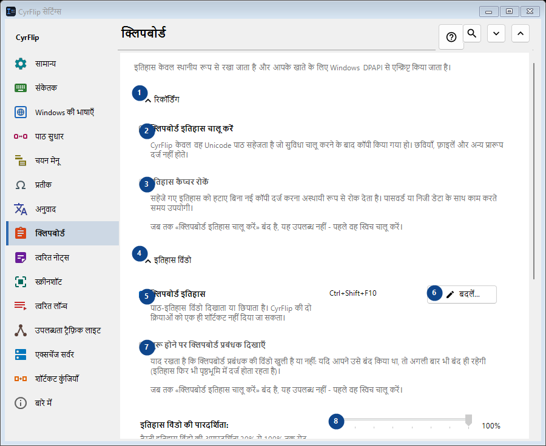
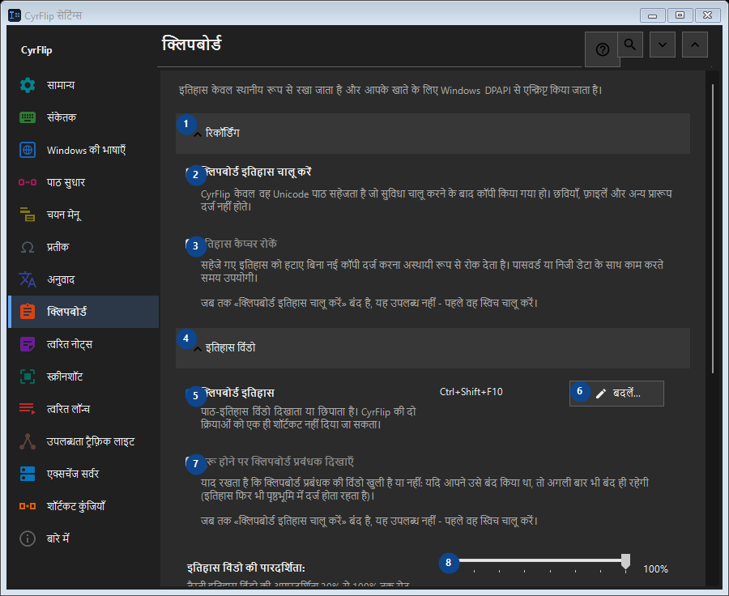

क्लिपबोर्ड
इसका उपयोग
इतिहास केवल स्थानीय रूप से रखा जाता है और आपके खाते के लिए Windows DPAPI से एन्क्रिप्ट किया जाता है।


उपयोग का क्रम
सेटिंग तुरंत लागू होती हैं। कोई अनिवार्य क्रम नहीं है; नीचे दिए समूहों का उपयोग करें।
तत्व
1. रिकॉर्डिंग
बताई गई कार्रवाई के लिए इस आदेश का उपयोग करें। स्वीकार करने से पहले पुष्टि पढ़ें।
आपके शॉर्टकट2. क्लिपबोर्ड इतिहास चालू करें
CyrFlip केवल वह Unicode पाठ सहेजता है जो सुविधा चालू करने के बाद कॉपी किया गया हो। छवियाँ, फ़ाइलें और अन्य प्रारूप दर्ज नहीं होते।
आपके शॉर्टकट3. इतिहास कैप्चर रोकें
जब तक «क्लिपबोर्ड इतिहास चालू करें» बंद है, यह उपलब्ध नहीं - पहले वह स्विच चालू करें। यह तत्व अभी उपलब्ध नहीं है। पहले सुविधा चालू करें या कोई प्रविष्टि चुनें।
आपके शॉर्टकट4. इतिहास विंडो
बताई गई कार्रवाई के लिए इस आदेश का उपयोग करें। स्वीकार करने से पहले पुष्टि पढ़ें।
आपके शॉर्टकट5. क्लिपबोर्ड इतिहास
पाठ-इतिहास विंडो दिखाता या छिपाता है। CyrFlip की दो क्रियाओं को एक ही शॉर्टकट नहीं दिया जा सकता।
आपके शॉर्टकट6. बदलें - क्लिपबोर्ड इतिहास
बताई गई कार्रवाई के लिए इस आदेश का उपयोग करें। स्वीकार करने से पहले पुष्टि पढ़ें।
आपके शॉर्टकट7. शुरू होने पर क्लिपबोर्ड प्रबंधक दिखाएँ
जब तक «क्लिपबोर्ड इतिहास चालू करें» बंद है, यह उपलब्ध नहीं - पहले वह स्विच चालू करें। यह तत्व अभी उपलब्ध नहीं है। पहले सुविधा चालू करें या कोई प्रविष्टि चुनें।
आपके शॉर्टकट8. इतिहास विंडो की पारदर्शिता
जब तक «क्लिपबोर्ड इतिहास चालू करें» बंद है, यह उपलब्ध नहीं - पहले वह स्विच चालू करें। यह तत्व अभी उपलब्ध नहीं है। पहले सुविधा चालू करें या कोई प्रविष्टि चुनें।
आपके शॉर्टकट9. इतिहास में खोजें
पाठ के अंश से खोजने के लिए एक अलग विंडो खोलता है। खोज के लिए कम से कम तीन अक्षर दर्ज करें।
आपके शॉर्टकट10. साफ़ करना
बताई गई कार्रवाई के लिए इस आदेश का उपयोग करें। स्वीकार करने से पहले पुष्टि पढ़ें।
आपके शॉर्टकट11. पूरा इतिहास मिटाएँ
मेमोरी और एन्क्रिप्टेड स्थानीय फ़ाइल से सभी प्रविष्टियाँ हटा देता है। इसे पूर्ववत नहीं किया जा सकता।
आपके शॉर्टकट12. दूसरे कंप्यूटर पर स्थानांतरण
बताई गई कार्रवाई के लिए इस आदेश का उपयोग करें। स्वीकार करने से पहले पुष्टि पढ़ें।
आपके शॉर्टकट13. निर्यात करें...
आपके नोट्स और चुने गए क्लिपबोर्ड इतिहास वाली एक खुली टेक्स्ट फ़ाइल: इसे किसी भी एडिटर या फ़ोन पर पढ़ा जा सकता है और दूसरे कंप्यूटर पर CyrFlip में आयात किया जा सकता है। फ़ाइल एन्क्रिप्ट नहीं होती। आयात दिखाता है कि क्या जोड़ा जाएगा और कुछ भी नहीं हटाता।
आपके शॉर्टकट14. आयात करें...
बताई गई कार्रवाई के लिए इस आदेश का उपयोग करें। स्वीकार करने से पहले पुष्टि पढ़ें।
आपके शॉर्टकट